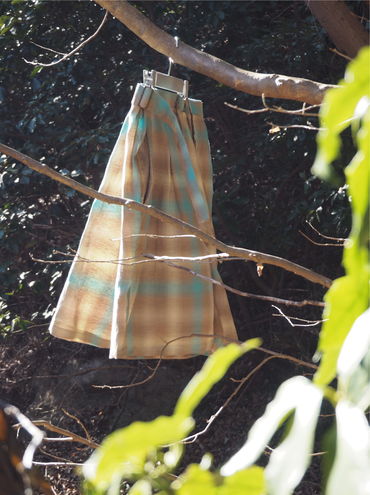
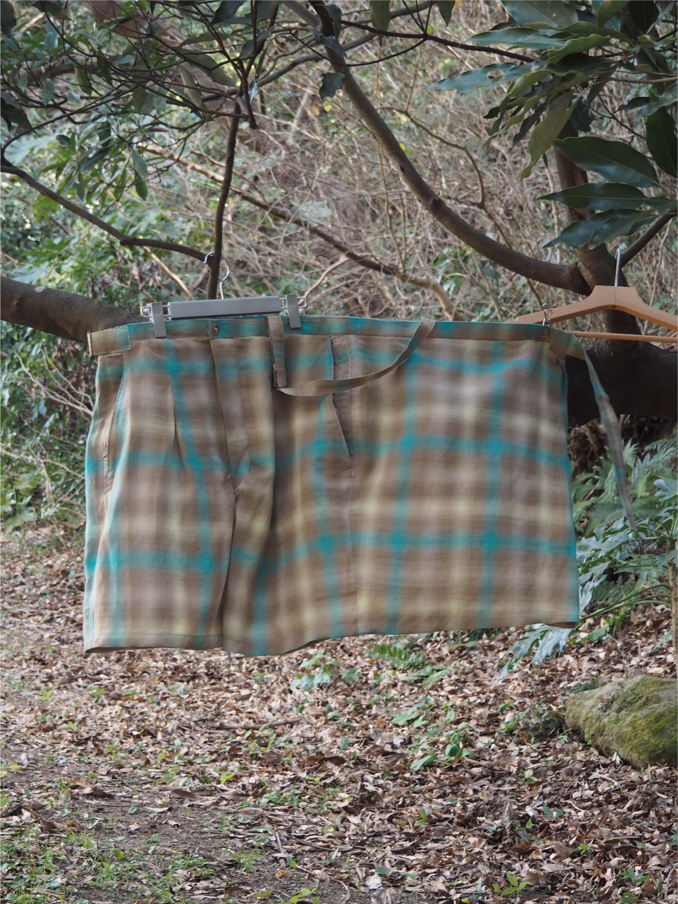
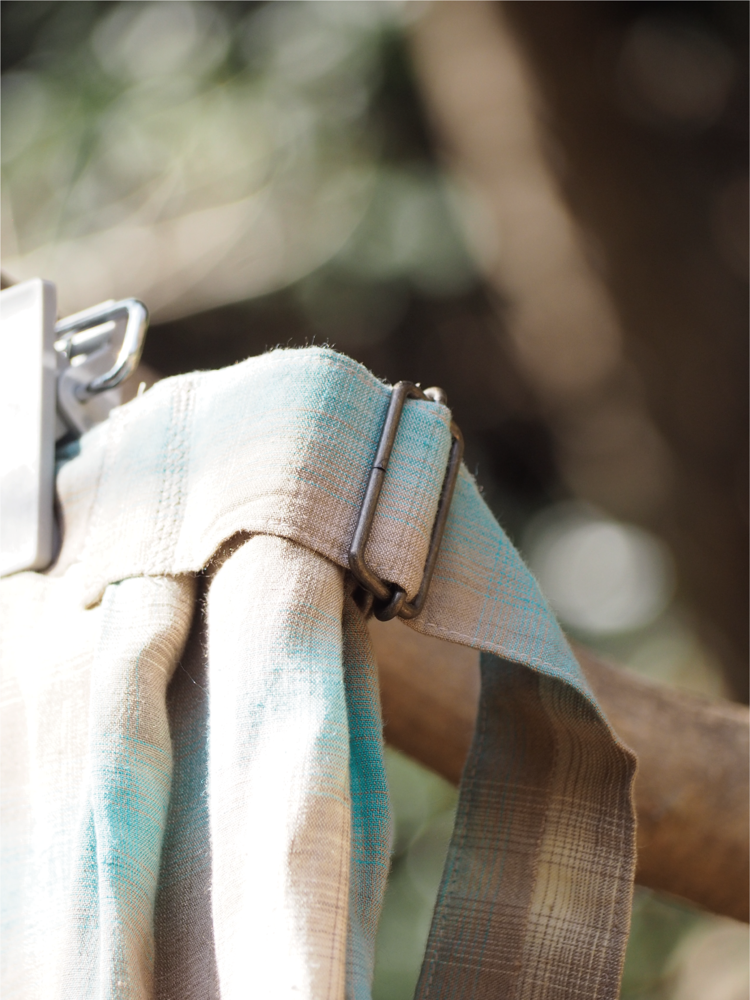
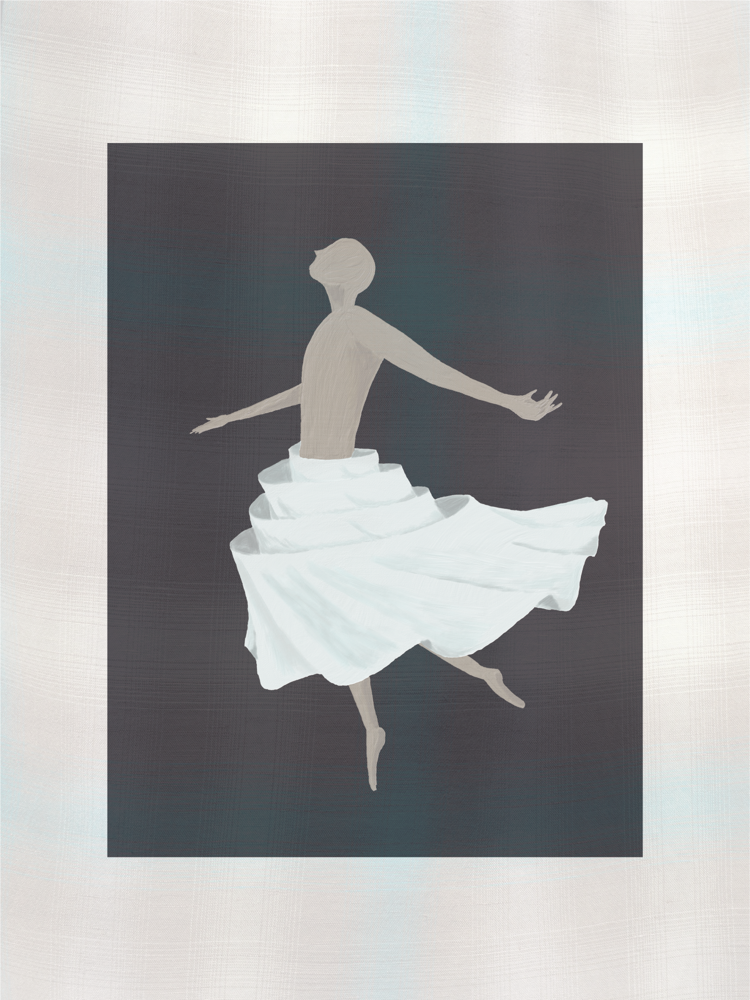

私たちは、毎日服を着ながらある一つのことを恐れています。それは、体型の変化によって今日着れた服がいつの日か着られなくなることです。そんな恐れは、おいしいご飯を食べるとき、ふと頭によぎるのです。足音を立てずに近づいてきて、日常を蝕むのです。そんな過度な恐れから解き放たれるために、私のウエストが今の倍になっても履けるパンツをつくることにします。
過剰な大きさのウエストに股を通し、巻つけることによって、私の今の大きさにフィットさせます。ハーフパンツでありながら、後ろに巻けば、スカートのようなふるまいをします。前にまけばエプロンのようです。巻かずに横に垂らせば、
腰にスカーフを括りつけているような優雅さがあります。
この小さな一着の服が、性差も、機能も、反復横跳びしながら飛び越えていってしまうのです。